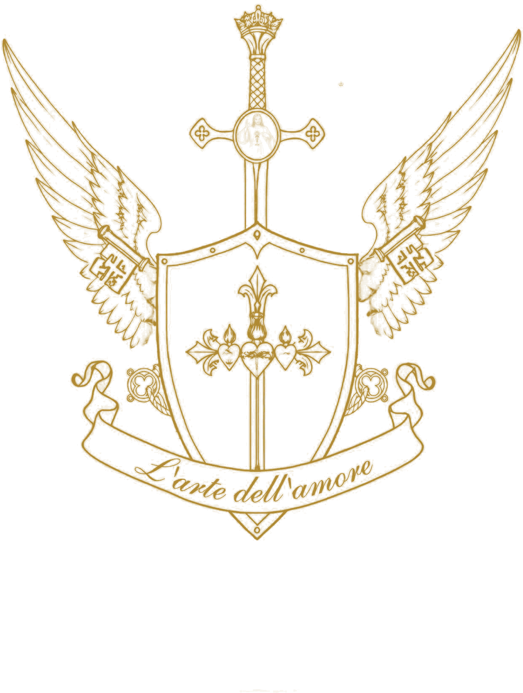

Amsterdam · coaching, photography, and things made by hand and by code
Charity is the crown of life.
L’arte dell’amore is a small house with a large hope: that you may see your life whole, and learn to spend it on love. I am still learning this myself, which is why the door is open.
Mission
To order the whole of life to love.
L’arte dell’amore accompanies people in the examination of conscience and the formation of virtue, so that each person may order their whole life to love: Love*, neighbour, and the common good.
I do this through personal coaching, photography that honours human relationships, digital tools for daily life, and works of art.
Vision
A world in which every person is received as bearing an inviolable dignity, knows their gifts, and has the habits and the freedom to spend their life for the good of others. I hold that this is the foundation of lasting joy, and of peace.
* God. · Read my seven values
The house
Seven rooms, one door.
- iIlluminated LifeOpenA rule of life across twelve fields of stewardship. No streaks, no points; the saints managed without a leaderboard.
- iiHealth and lifestyle coachingOpenOne to one, online or in Amsterdam. From €95 a session.
- iiiPhotographyOpenWeddings, engagements, families and portraits. From €195.
- ivThe LetterFreeOnce a week: one thing for the body, one for the mind, one story for the soul.
- vDigital productsIn the makingCatholicity OS for Notion, and Catholic Healing Arts.
- viArt prints and giftsIn the makingGold fine line on natural paper; ethical and sustainably produced clothing.
- viiAppsIn the makingGlobal Holy Rosary, Beatitude, Eternal Camino.
Begin with a conversation.
amore@lartedellamore.com